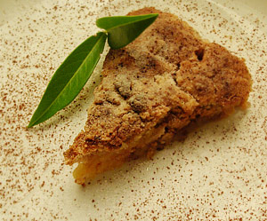

Apple crumble
5 von 650 g weiche butter in eine schüssel geben. je ca. 75 g zucker und mehl dazu geben, alles mischen. 3 geraffelte äpfel, etwas zimt und einwenig zitronensaft beigeben. bei 200 grad ca. 15 minuten überbacken. mit vanille glace servieren.
